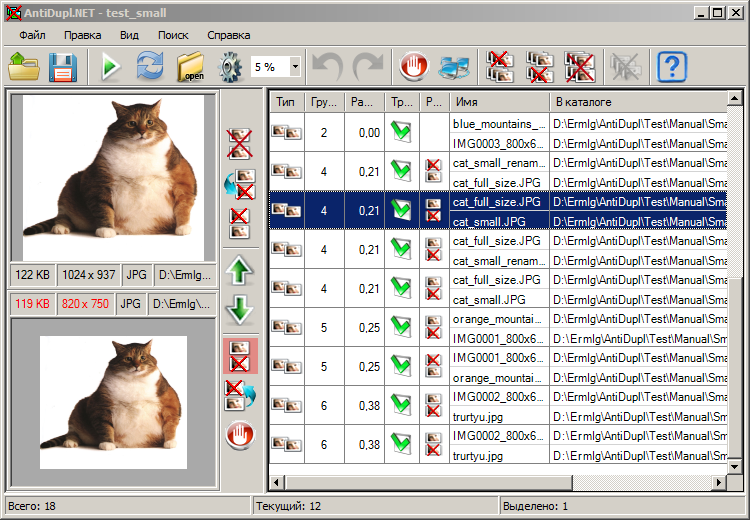

Панель инструментов
Панель инструментов располагается в верхней части главного окна программы.
Она дублирует наиболее часто используемые действия главного и контекстного меню. На ней располагаются следующие кнопки:
Открыть профиль поиска - нажав на этот пункт можно загрузить ранее сохранённый профиль поиска (настройки поиска, пути поиска и результаты поиска).
Сохранить профиль поиска как - данный пункт меню позволяет сохранить текущий профиль поиска под новым именем.
Начать поиск - нажав данную кнопку, можно начать поиск.
Обновить результаты - нажав данную кнопку, можно обновить результаты поиска.
Пути - вызывает окно настройки путей либо его упрощенный вариант.
Опции - вызывает окно настройки опций.
Пороговая разность - дублирует параметр пороговой разности из окна настройки опций.
Отменить (Ctrl-Z) - позволяет отменить последнее действие пользователя.
Повторить (Ctrl-Y) - позволяет повторить ранее отмененное действие.
- Пометить выделенные результаты как ошибочные. Данная кнопка позволяет занести выделенную пользователем группу результатов (дефектных картинок и дублирующих пар) в базу данных об ошибках.
- Автоматически обработать выделенные результаты. При нажатии данной кнопки компьютер выполнит рекомендуемые им действия над выделенной пользователем группой результатов.
или
- Удалить первые картинки в выделенных результатах. Она позволяет удалить все первые картинки в дублирующих парах, которые выделил пользователь.
или
- Удалить вторые картинки в выделенных результатах. Она позволяет удалить все вторые картинки в дублирующих парах, которые выделил пользователь.
или
- Удалить все парные картинки в выделенных результатах. Удаляет все дублирующие пары, которые выделил пользователь.
или
- Удалить испорченные картинки в выделенных результатах. Удаляет все дефектные картинки, которые выделил пользователь.
Справка - нажав данную кнопку, можно вызвать справку.
Видимость панели инструментов регулируется посредством пункта Вид - Панель инструментов в главном меню.